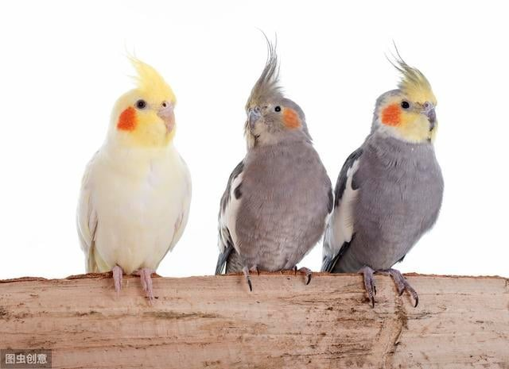
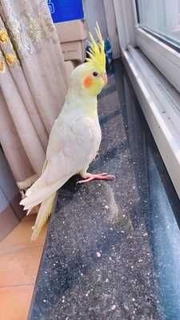

玄鳳鸚鵡基本介紹
- 名稱：玄鳳鸚鵡
- 壽命：15到18年
- 性格：非常膽小、互動性強、愛咬人，性格與牡丹鸚鵡相比稍顯平和
- 產地：澳大利亞
- 體長：30~34 釐米左右
- 飼料：吃的種類很豐富，例如五色黍子、穀子、燕麥米、麻籽、蘇子、亞麻籽、迦納利子、小瓜子等等都愛吃。
- 入手難度：低，飼養的人很多
- 智商：較低
- 說話能力：★★☆☆☆
很多人都喜歡玄鳳鸚鵡吧！和虎皮、和尚比起來，玄鳳顯的比較溫順可愛，我超級愛它！如果你正準備飼養，那麼你要瞭解玄鳳鸚鵡的種類、智商、壽命等等基本常識。其次如果你是進階玩家，可以訓練它說話、飛手等等。當然最重要的是你需要瞭解它的日常飼料配方，接下來我們就一起看看吧！
玄鳳鸚鵡常見種類
常見的種類主要有珍珠、黃化、原始灰這三種，當然也還有派特、白化、绿宝石等等噢。雖然品種不同，但是他們的性格都差不多，壽命也都在15~18年左右。各個品種不同價格也不太一樣，數量越少的價格越貴！目前市面上比較受歡迎的是黃化，主要是外觀超級迷人，非常多的人願意去飼養它。
珍珠
珍珠是我最不喜歡的種類了，它的羽毛整體來看為灰色，在背部、翅膀等地方有著各式各樣的斑點，外觀不是很好看，如果讓我選擇的化我更加原因選擇黃化。目前市場售價在320新台幣左右，各個地方的價格不一致。

黃化
黃化是很多人最喜歡的玄鳳品種，外表整體為全身白色羽毛，頭部為黃色，在臉頰兩側有兩坨紅色小圓球。常見的黃化因為長得太像小雞了，因此一般人也戲稱為養雞。目前市場售價在500塊錢信新台幣左右。
原始灰
原始灰外表整體為灰色和黑色，其餘部分有些蛋蛋的黃色，然後在臉頰有兩坨紅色的小圓半點，非常的可愛，但是與黃化比起來不是非常好看，在野外可以抓到。目前市場價格在520新台幣左右，在花鳥市場可以買到。